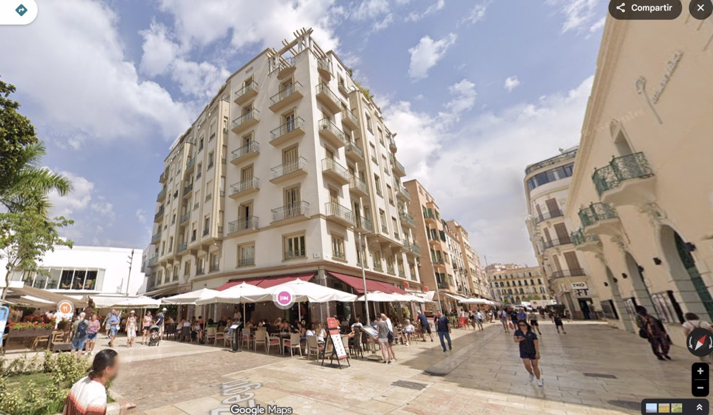

Na Svatý čtvrtek (Jueves Santo) vrcholí ve Španělsku Velikonoce. Dnes přes den i v noci prochází městy ta nejpočetnější procesí, atmosféra je nejhustší a ulice španělských měst zaplňují desetitisíce lidí.
V Málaze má ale tento den ještě jeden zvláštní moment. Mezi kajícníky se objevuje muž, kterého zná celý svět – Antonio Banderas.
Bez červeného koberce, bez ochranky. V tunice, s kapucí a svící v ruce. Prostě jako jeden z mnoha.
Málaga – procesí kam se podíváš
Semana Santa patří v Málaze k největším událostem roku. Během celého týdne vychází do ulic přibližně 42 náboženských bratrstev, tedy cofradías, které uskuteční více než čtyři desítky procesí. Jen na Jueves Santo vychází osm velkých bratrstev a historické centrum zaplní desítky tisíc lidí. Ulice se promění v nepřetržitý proud diváků, hudby a pomalu kráčejících průvodů. Právě v této atmosféře se objevuje i jeden z nejslavnějších účastníků.
Rodák z Málagy
Antonio Banderas se narodil v roce 1960 právě v Málaze. Otec byl policista, matka učitelka. Původně chtěl být profesionálním fotbalistou, ale zranění ho přivedlo k divadlu. Později odešel do Madridu, kde začal spolupracovat s režisérem Pedrem Almodóvarem a odtud vedla jeho cesta až do Hollywoodu.
Diváci ho znají z filmů jako The Mask of Zorro, Desperado, Evita, Philadelphia nebo Puss in Boots. Za film Pain and Glory získal nominaci na Oscara. Přesto se nikdy nepřestal vracet domů.
Kajícník mezi ostatními
Antonio Banderas je členem bratrstva Lágrimas y Favores a pravidelně se účastní procesí jako nazareno. V minulosti se zapojoval i jako costalero, tedy jeden z mužů, kteří nesou těžké paso. To může vážit několik tun a procesí trvá mnoho hodin. Většina costaleros proto končí kolem padesátky a ani Antonio Banderas už dnes paso nenosí. V procesí ale stále chodí. Pro místní je důležité, že není jen symbolickou tváří. Je skutečně součástí tradice.
Jeden „z party"
V Málaze ho nevnímají jen jako hollywoodskou hvězdu. Spíš jako „jednoho z nich". Lidé ho potkávají na ulici, v divadle, na promenádě nebo v restauracích. Není obklopen ochrankou, zastaví se, pozdraví, vyfotí se. Působí jako velký sympaťák a fajn chlap. Po zdravotních problémech v roce 2017 začal trávit v Málaze ještě více času a dnes zde pobývá většinu roku.
Bar, kde je doma
Jedním z míst, kde ho lze občas potkat, je legendární El Pimpi. Antonio Banderas je jedním z jeho spolumajitelů a podnik se nachází jen kousek od místa, kde bydlí. Patří mezi nejslavnější bary ve městě. Stěny jsou plné fotografií známých osobností, ale Banderas sem chodí spíš jako místní. Sedne si, dá si víno a mluví s lidmi.
Investice do rodného města
Antonio Banderas nikdy neskrýval, že jeho hlavní investicí je rodná Málaga. Jedním z nejviditelnějších příkladů je právě El Pimpi, jehož se stal spolumajitelem. Nešlo o náhodu – herec bydlí v domě přímo naproti a do tohoto baru chodí od mládí. Podle místních sem přichází nenápadně, často s kšiltovkou, posedí u sklenky vína a tráví čas s přáteli nebo rodinou. Na stěnách podniku dodnes visí fotografie mladého Banderase, jak podepisuje jeden ze sudů ve sklepě.
Investice do města ale sahají mnohem dál. Prostřednictvím nadace Lágrimas y Favores každoročně podporuje sociální a vzdělávací projekty v Málaze. Vedle toho se podílel na vzniku divadelního projektu, který vyústil v otevření Teatro del Soho CaixaBank, dnes jednoho z nejvýznamnějších kulturních center města.
Herec má v historickém centru Málagy byt poblíž Alcazaby, odkud je jen pár kroků do míst, kde se odehrávají největší procesí. Právě odsud často vyráží do ulic během Semana Santa. Pro místní je symbolem toho, že i světová hvězda může zůstat pevně spojená se svým městem.
Jako spolumajitel El Pimpi se navíc podílel také na otevření nové taberny tohoto podniku v hotelu Puente Romano v Marbelle, jednom z nejprestižnějších míst celé oblasti.
Tradice silnější než sláva
Na Zelený čtvrtek tak můžete v Málaze vidět zvláštní obraz. Hollywoodská hvězda kráčí v procesí spolu s tisíci dalších. Bez výjimek, bez privilegií. Jen jako člen bratrstva.
V Hollywoodu hvězda. V Málaze je to prostě jen Antonio. 😊

